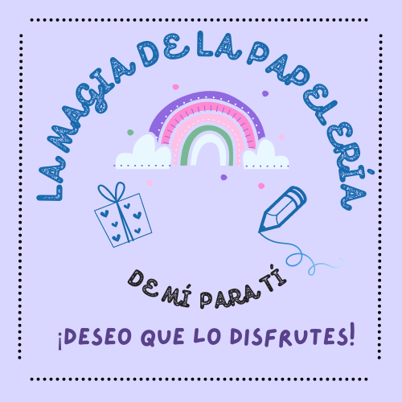

IDEAS



Tipos de productos que se venden en la papelería:
- Galletas
- Cuadernos
- Sabritas
- Cajas de regalo
- Listones
- Fomi
- Dulces
- Cartulinas
- Esferas de unicel
- Papel de regalo
¿Cómo llegan los productos que se venden a la papelería?
- La señora Amabel llama a quien le vende la mercancía.
- Acuerdan el número y tipo de productos a comprar.
- La señora Amabel paga por la maercancía.
- Llega la mer ancía al domicilio de la papelería.
- La señora Amabel recibe y ordena la mercancía dentro de la papelería.
- Finalmente, se vende la mercancía (productos) en la papelería.
© 2023.Derechos reservados
Desarrollado por: Valentina Lizbeth Gamez Chavira Matrícula: 02019201 Grupo: 606#
Plantel Nueva Tijuana